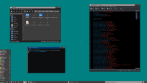

A dark and improved variant of the win95 theme for IceWM. For those who like basic blocky dark themes.
IceWM has a default theme called win95 which is meant to look similar to the look of the Windows 95 operating system.
I like that theme since it's pretty basic, but I wanted a dark version.
Some time ago I read a blog post called The failures of Windows 10 "Dark Mode" which has screenshots of some kind of dark version of the Windows 95 theme. Both the screenshots for Windows 95 and Windows XP are useful.
Unfortunately, the one for Windows 95 seems to be scaled down, so you lose sharpness. Picking colours becomes harder, but I am not necessarily looking to make a picture perfect version. After all, I don't think Windows 95 actually had a dark theme, at least not officially.
Searching around for more images of potentional old Windows dark themes, I stumbled upon a reddit comment of a user who shares an image of another dark theme for windows 95/98. Since these themes are custom, colours will differ, but it's good for inspiration nonetheless.
{kind=link}
Light colours are turned into darker colours, and vice versa. Tooltips are slightly yellowish in older Windows versions, so I made them dark turquoise, and title bars have a smoother blue colour.
Screenshot
Download and Install
To download the theme, either get the latest release as a tarball or clone the repo.
By cloning the repo, you can use git pull to easily fetch any new updates immediately.
Just run the commands below.
mkdir -p $HOME/.icewm/themes git clone https://github.com/Brottweiler/win95-dark.git $HOME/.icewm/themes